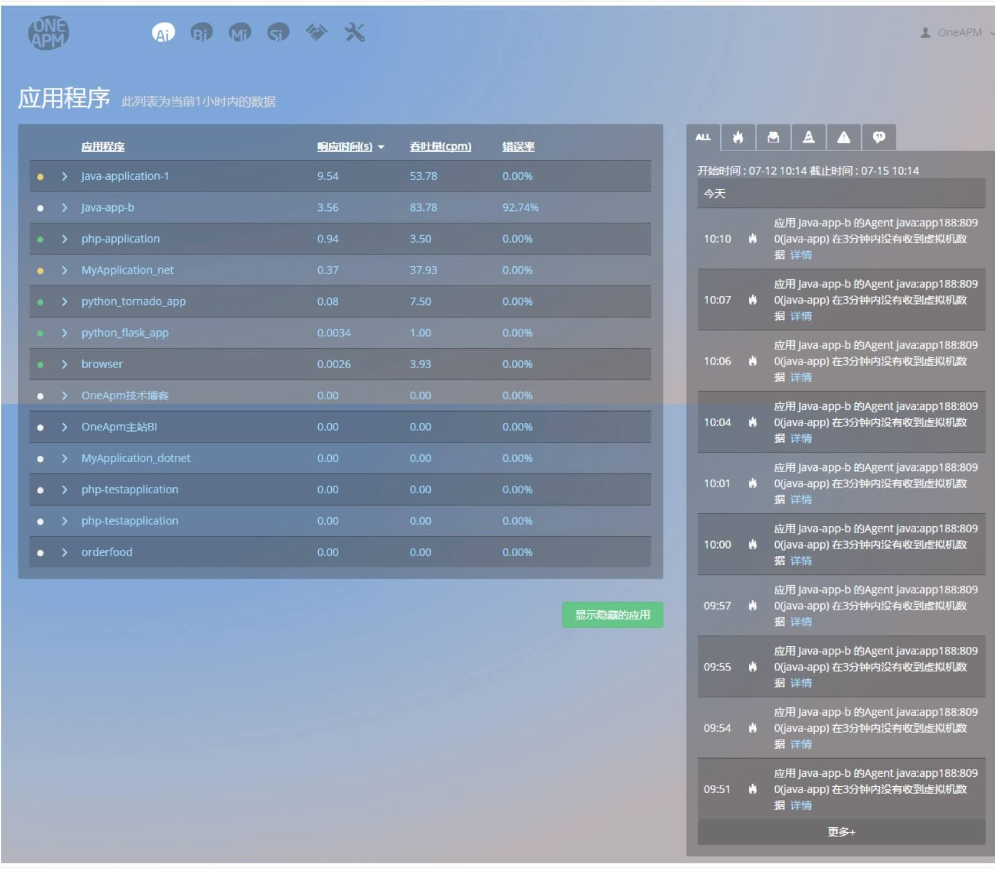

快速入门
- Application Insight 是一个贯穿应用系统全生命周期的真实用户体验管理和应用性能管理平台级解决方案。
安装使用
- 目前我们主要支持以下六大语言的应用监控，您需要安装各自探针：
- Java Agent
- Php Agent
- Ruby Agent
- .Net Agent
- Node.js Agent
- Python Agent
功能简介
首页
该页面主要展示两个列表：应用程序列表与报警事件列表。
应用程序列表主要展示 Ai 监控的应用程序总览信息，包括应用名称、响应时间、吞吐量和错误率。鼠标悬停在列表最右端，会浮现修改应用程序名称的图标。
报警事件列表展示最新的报警事件。 
OneAPM 安装部署
开始使用Application Insight
OneAPM Ai，全名为 OneAPM Application Insight，是 OneAPM 为企业级用 户精心打造的应用性能管理(Application Performance Management)产品
欲知详情，请查看 安装部署
监控
- 该模块包含应用最重要的监控信息。主要包括：总览、拓扑、Web 事务、数据库、外部服务和后台任务六个页面。对于 Java 应用，还有 JVMs 页面，监控 Java 虚拟机的性能。
- 欲知详情，请查看：监控
事件
- 该模块目前主要包括应用的错误信息。包括错误率、发生次数，以及详细的错误请求信息。
- 欲知详情，请查看：事件
报表
- 该模块主要包括 Web 事务报表，数据库报表。对于 Java 应用，还有 JVM 报表。您还能以 Excel 格式下载报表。
- 欲知详情，请查看：报表
设置
- 该模块包括服务器环境、应用设置和自定义事务三个页面。您可以查看应用服务器的参数配置、修改监控配置，还能按照需求定义自己关心的事务。
- 欲知详情，请查看：设置
关键事务
- 该模块为您提供添加对业务影响较大的 Web 事务的入口。您还可以查看事务的拓扑情况，并进行性能剖析，深入了解该事务的执行情况。
- 欲知详情，请查看：关键事务
报警设置
- 该模块为您提供添加报警事件的入口。您可以自己创建报警策略，也可以分类查看最新的报警事件。
- 欲知详情，请查看：报警设置